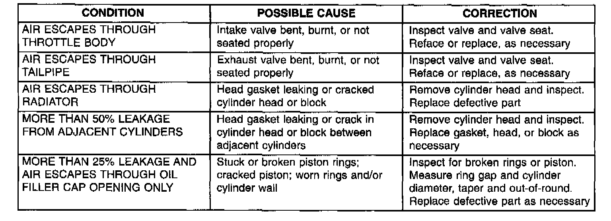

Cylinder Combustion Pressure Leakage Test
GENERAL INFORMATIONThe combustion pressure leakage test provides an accurate means for determining engine condition. Combustion pressure leakage testing will detect:
- Exhaust and intake valve leaks (improper seating).
- Leaks between adjacent cylinders or into water jacket.
- Any causes for combustion/compression pressure loss.
WARNING: DO NOT REMOVE THE RADIATOR CAP WITH THE SYSTEM HOT AND UNDER PRESSURE BECAUSE SERIOUS BURNS FROM COOLANT CAN OCCUR.
PROCEDURE
1. Check the coolant level and fill as required. DO NOT install the radiator cap.
2. Start and operate the engine until it attains normal operating temperature, then turn the engine OFF.
3. Remove the spark plugs.
4. Remove the oil filler cap.
5. Remove the air cleaner.
6. Calibrate the tester according to the manufacturer's instructions. The shop air source for testing should maintain 483 kPa (70 psi) minimum, 1379 kPa (200 psi) maximum and 552 kPa (80 psi) recommended.
7. Perform the test procedures on each cylinder according to the tester manufacturer's instructions. While testing, listen for pressurized air escaping through the throttle body, tailpipe and oil filler cap opening. Check for bubbles in the radiator coolant. All gauge pressure indications should be equal, with no more than 25% leakage.
FOR EXAMPLE: At 552 kPa (80 psi) input pressure, a minimum of 414 kPa (60 psi) should be maintained in the cylinder.
Cylinder Combustion Pressure Leakage Test Diagnosis Chart:

For any unsatisfactory test results, refer to the Cylinder Combustion Pressure Leakage Test Diagnosis chart.